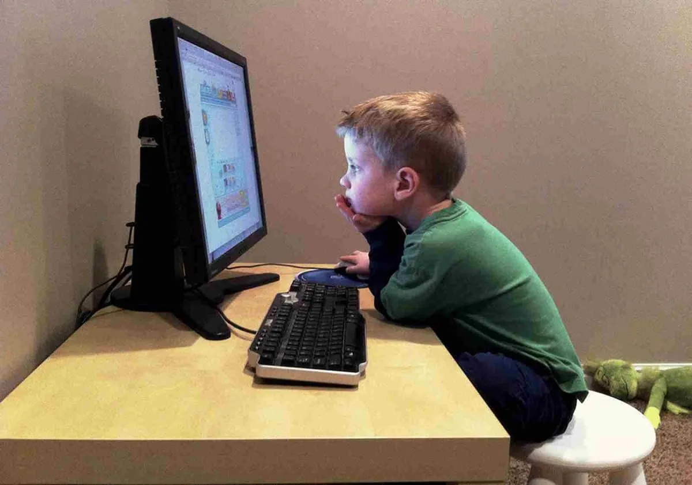

El tema central de nuestro proyecto va más enfocado en lo que respecta al desarrollo de la página web con los conocimientos ya adquiridos, para resolver una problemática que en general afecta especialmente a los niño y jóvenes este debido a que este juego sirve para ampliar tanto en conocimiento en HTML, CSS y JS. El tema de nuestro proyecto es desarrollar juegos educativos.
Decidimos realizar este proyecto para hacer una forma de enfoque diferente a la usual, en una corta síntesis hacer la educación más entretenida para llamar la atención y ayudar al aprendizaje mediante un método alternativo.
Según el Dr. Francisco Mora que afirma que la mejor forma de la mejor forma de aprender es por medio del interés, el interés de una persona hace que aprenda mas eficientemente ya que centra su atención en lo que realmente se interesa. Un ejemplo claro seria como un niño demuestra interés a un juego, ya que le causa emoción y curiosidad.
Este estudio que dice que “No hay aprendizaje si no hay emoción”. Es conocida como Neurociencia.
El objetivo principal del juego se enfoca en dos problemáticas centrales, que a lo largo este siglo XXI se hizo más evidente y que es un problema que aqueja a los estudiantes más nuevos, y que es un nuevo método de enseñanza educativo, ya que día a día se hace más evidente que los jóvenes muestran menos interés en los estudios y el objetivo es por una parte Demostrar un método de enseñanza alternativo,
Se hace este proyecto con el objetivo de ayudar, demostrar recolectar datos para posteriormente mejorar y fortalecer el aprendizaje mediante el uso de páginas web que contenga juegos que ayuden de manera positiva con el aprendizaje.

Este juego son completamente gratuito gracias a que será subido a una página web donde podrán acceder y jugarlo todos los usuarios sin necesidad de descargar nada. Además, contara con juegos que ayudan al desarrollo positivo de los jóvenes e niños, demostrando y usando métodos de enseñanza que su principal finalidad es aliviar el estres constante que hay en la monotonia de la vida. Y del Estudio.
Proyecto de JC y RL